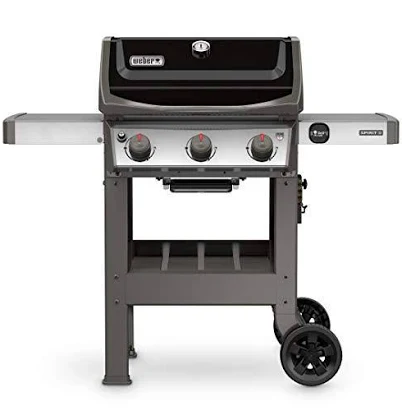
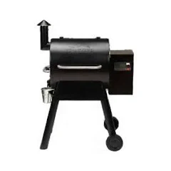
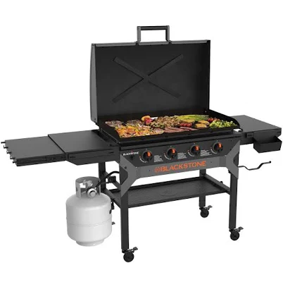
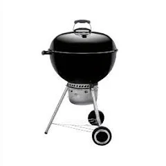
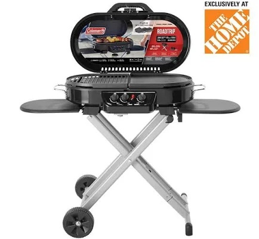

Best BBQ Grills & Outdoor Cooking Gear for Summer 2026: Price Comparison Guide
Summer is here, dad. That means it's time to fire up the grill, crack open a cold one, and feed the whole neighborhood. Whether you're hosting a Fourth of July block party, a backyard birthday bash, or just a casual Sunday cookout with the kids, having the right gear makes all the difference. But with prices varying wildly across Amazon, Walmart, Home Depot, Lowe's, and eBay, how do you know you're getting the best deal?
We've done the homework for you. Here's our guide to the best BBQ grills and outdoor cooking gear for summer 2026, with price comparisons across the top retailers so you can save big and spend more on the meat.
🔥 Pro tip: Before you buy any outdoor cooking gear, compare prices across multiple stores at SnappRice — we search Amazon, Walmart, eBay, Home Depot, Lowe's, and Target so you don't overpay.
1. Weber Spirit II E-310 — Best Mid-Range Gas Grill
If you want a reliable gas grill that will last you a decade, the Weber Spirit II E-310 is the sweet spot. Three burners push out 32,000 BTUs, the porcelain-enameled lid holds heat beautifully, and the built-in thermometer takes the guesswork out of grilling. It's the grill that dads across America trust for burgers, steaks, chicken, and everything in between.

2. Traeger Pro 575 — Best Wood Pellet Grill for Smoking
Want that authentic smoky flavor without babysitting a fire all day? The Traeger Pro 575 is the answer. It's a set-it-and-forget-it pellet grill that delivers incredible bark on brisket, perfect ribs, and juicy pulled pork. The WiFIRE technology lets you monitor and control the temperature from your phone — perfect for dads who want to watch the game while the meat cooks.

3. Blackstone 36" Griddle — Best for Family Breakfast & Big Cookouts
The Blackstone 36-inch griddle has become an absolute phenomenon among American dads. With its massive flat-top cooking surface, you can make 24 pancakes at once, sear smash burgers by the dozen, or cook fajitas for the whole block party. It runs on two propane tanks and heats up in minutes. This is the ultimate tool for feeding a crowd.

4. Weber Original Kettle Premium — Best Charcoal Grill for Purists
Sometimes nothing beats the smoky flavor of charcoal. The Weber Original Kettle Premium is a timeless classic that every dad should own. It's affordable, portable, and produces incredible flavor. The hinged cooking grate makes adding charcoal mid-cook easy, and the ash catcher simplifies cleanup. Perfect for backyard cookouts and beach trips alike.

5. Coleman RoadTrip 285 — Best Portable Grill for Camping & Tailgating
For dads who love camping, fishing, or tailgating, the Coleman RoadTrip 285 is the ultimate portable propane grill. It folds into a compact unit with wheels, lights up with push-button ignition, and delivers 20,000 BTUs of power. The interchangeable cooktops (grill, griddle, or stove) make it incredibly versatile for any outdoor adventure.

6. Essential BBQ Accessories Every Dad Needs
A great grill deserves great tools. Here are the accessories that will level up your outdoor cooking game this summer:
- ThermoPro TP20 Meat Thermometer ($29.99) — Dual probe wireless thermometer with 300ft range. Never overcook a steak again.
- Grillaholics BBQ Tool Set ($39.99) — Heavy-duty stainless steel spatula, tongs, fork, and basting brush in a portable case.
- Weber Smoker Box ($14.99) — Add wood chips for smoky flavor on any gas grill. Hickory, mesquite, or applewood — you choose.
- Grill Rescue Cleaning System ($24.99) — Steam-clean your grates in 30 seconds without chemicals. Every dad's best friend.
- Yeti Roadie 24 Cooler ($199.99) — Keep the drinks ice-cold all day long. Bear-proof, dad-proof, and built to last a lifetime.
7. Portable Camping Stoves for Picnics & Beach Trips
Not every summer meal needs a full-sized grill. For beach days, park picnics, and hiking trips, a portable camping stove is essential. The Camp Chef Everest 2X delivers 20,000 BTUs and boils water in under 3 minutes — perfect for coffee, hot dogs, and quick meals on the go. The MSR PocketRocket 2 is ultralight at 2.6 oz and ideal for backpacking dads who want a hot meal at the summit.
🏕️ Compare prices on camping stoves, coolers, and outdoor cooking gear at SnappRice before your next trip. We check Amazon, Walmart, REI, and eBay so you save on every purchase.
Summer BBQ Shopping Tips
Before you pull the trigger on any big purchase this summer, here are a few tips to keep more cash in your wallet:
- Check prices across at least 3 stores. We regularly see $20–$50 differences on the same grill between Amazon and Walmart.
- Look for Memorial Day & Fourth of July sales. These are the two biggest BBQ sales events of the year. Most major retailers offer 15-30% off grills and accessories.
- Don't forget open-box & refurbished deals. eBay and Amazon Warehouse often have grills with damaged boxes at 30-40% off. The grill inside is brand new.
- Buy accessories in bundles. Tool sets, cover, and thermometer bundles nearly always beat buying separately.
- Use SnappRice to compare everything in one place. Search once, compare prices across all major retailers, and click straight to the best deal.
Fire Up the Grill This Summer
Whether you're a charcoal purist, a pellet convert, or a gas grill loyalist, the perfect setup for your summer cookouts is out there — and it doesn't have to break the bank. The key is knowing where to look and comparing prices before you buy.
SnappRice makes it easy. Just search for the grill or accessory you want, and we'll show you prices from Amazon, Walmart, Home Depot, Lowe's, eBay, Target, and more — all in one place. No hopping between tabs, no second-guessing if you got the best deal.
So grab your tongs, fire up the grill, and make this summer one to remember. Happy cooking, dads! 🍔🔥